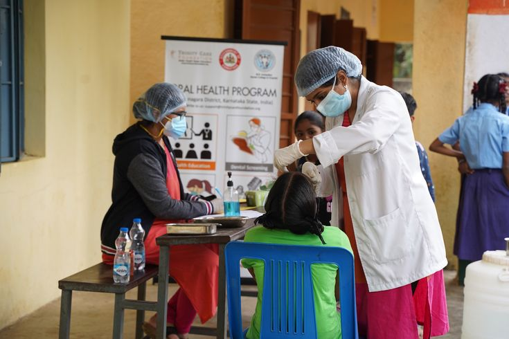
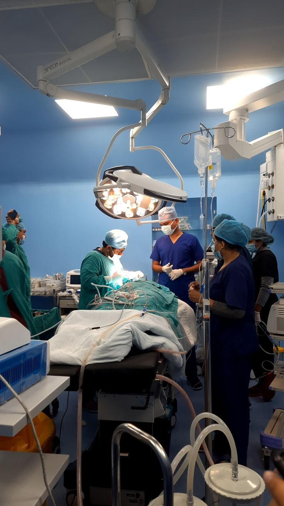
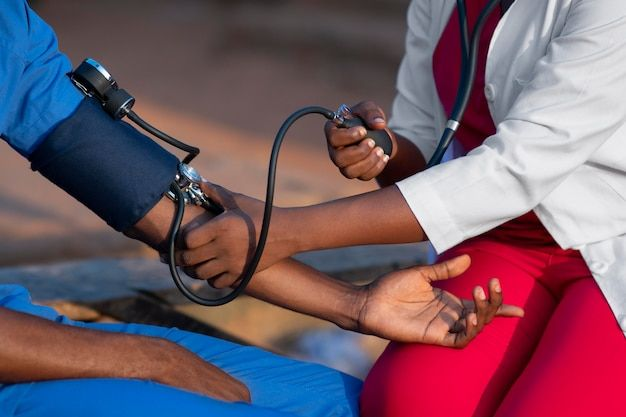
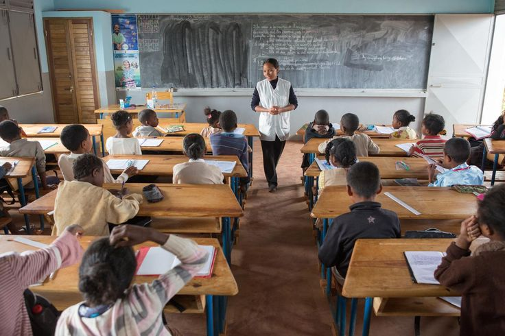

Food & Relief Drives
Providing meals, clothing, and essential supplies to families in need within our community.



Medical Missions
Offering free health check-ups, treatments, and medical support for underserved communities.

Educational Support
Scholarships, school supplies, and mentorship programs to empower the next generation.